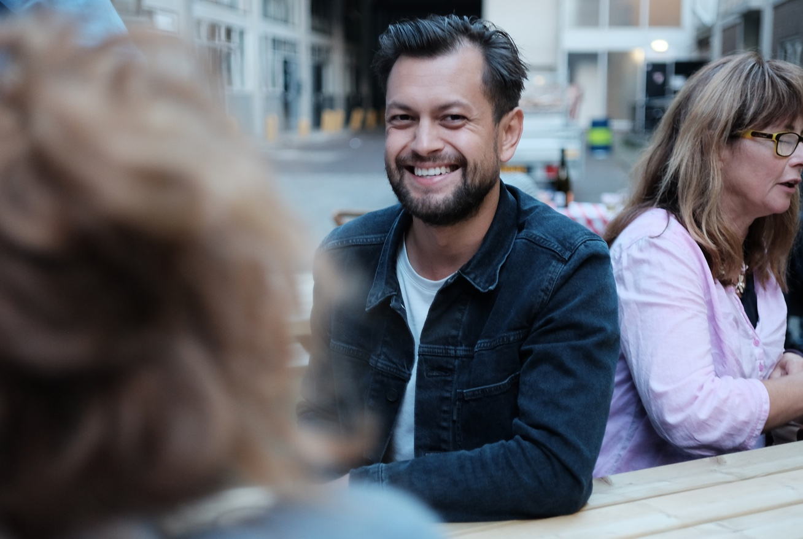
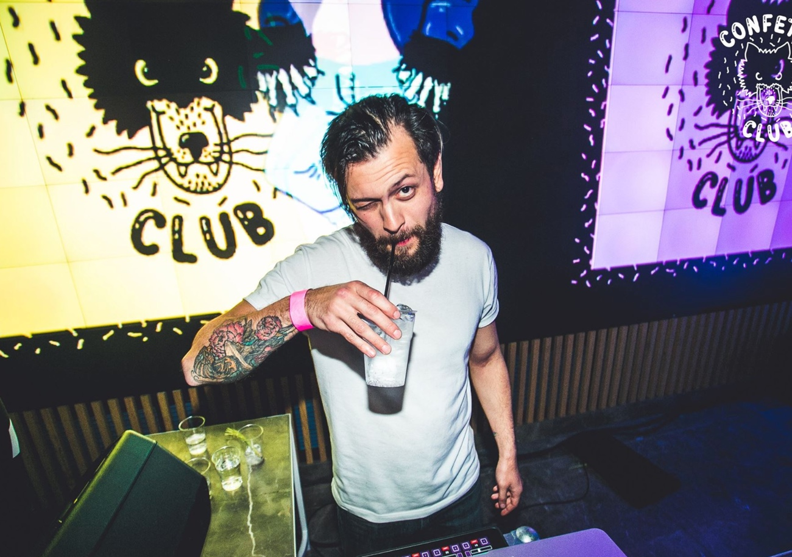

Multimedia design, whatever..
Crafting digital experiences on screen or off-screen.
From my hometown Rotterdam and everywhere else in the world.
With beard or without beard.
Currently lecturing Creative Technologies and Prototyping at the Rotterdam Universty of Applied Sciences.

